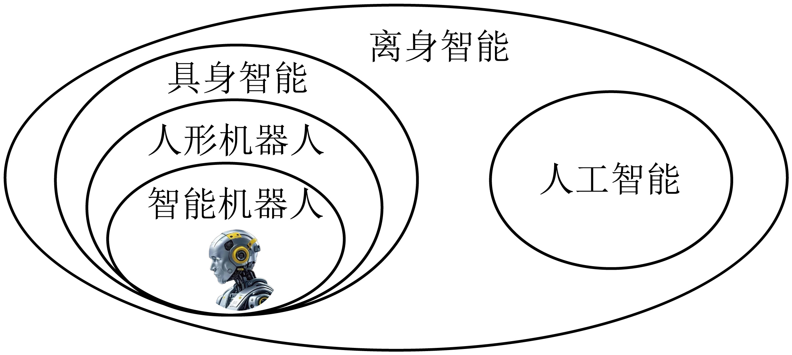
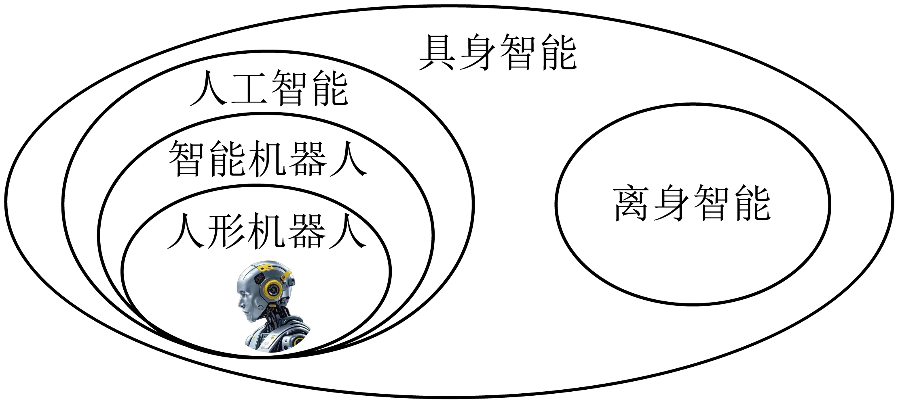
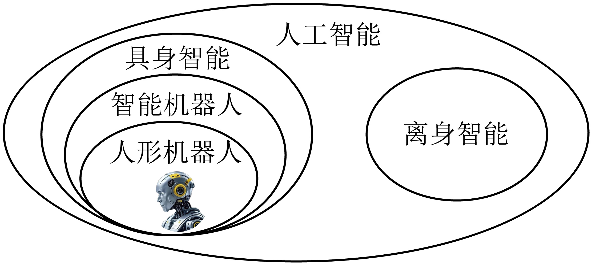
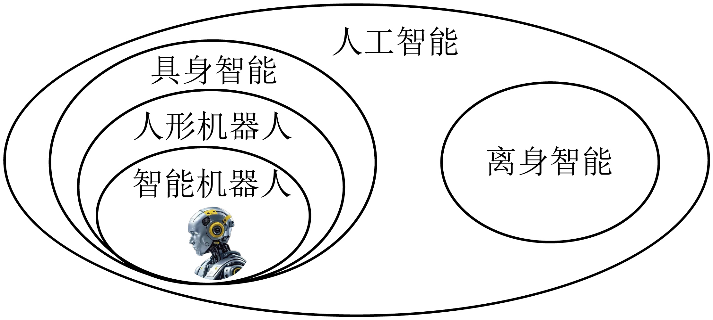

练习 · 语言文字运用
离身智能与具身智能
根据文中界定辨析概念关系，讨论科普表达与判断条件。
导读
文体与题材：科普说明文；人工智能概念辨析。
作者简介：
文本出处：
内容脉络：文章以实体同环境的互动解释具身智能，再讨论智能机器人的感知与行动功能。后文由人形设计延伸到应用场景及落地限制，使概念说明与现实条件相互制约。
内容主旨：语段以实体与环境的互动解释具身智能，并讨论其感知、行动及应用条件。
阅读重点：区别具身性与人形外观，核验定义、分类和前景判断，避免将可能性写成必然性。
原文
原文按结构分节；随文内容可定位至对应段落。
概念引入：以实体和环境互动解释具身。
有专家尝试从与“离身智能”作对比的角度来解释具身智能。区别于DeepSeek或者ChatGPT等离身智能，以及可能存在虚拟空间、数字空间、信息空间的智能，具身智能一定要有物理的实体。简单来说，就是让人工智能真正“长出身体”，它不仅要像人一样能看、能听、能感受，还要学会规划与决策，（）地完成各种复杂动作。如果说现在的离身智能只是“动嘴皮子”，那么具身智能则需要在物理世界“干活”，是一个“实干家”。
注释 · 批注 · 札记 1
阅读提示
具身智能、智能机器人、人形机器人等诸多新概念、新名词（）此处在全篇中的功能是：概念引入：以实体和环境互动解释具身。。相关概念须结合上下文限定理解。
功能界定：讨论智能机器人的感知与行动。
注释 · 批注 · 札记 1
阅读提示
智能机器人是具身智能的一种表现形式，它的字面意义更易理解功能界定：讨论智能机器人的感知与行动。。阅读时应区分该部分的事实陈述、解释关系与评价词。
应用前景：说明人形设计及其落地限制。
注释 · 批注 · 札记 1
阅读提示
智能机器人和人形机器人都是具身智能的分支，后者是前者的最根据文中界定辨析概念关系，讨论科普表达与判断条件。
阅读辨析
本篇按文中界定作概念辨析。“最高形态”“最佳载体”是评价性说法，不能不附任务条件地视为技术定论；具身智能的研究范围也不只限于模拟人类形态。
第1题 · 概念关系
下列对材料相关概念关系的梳理，正确的一项是（）
A．离身智能包含具身智能与人工智能；具身智能包含人形机器人，人形机器人再包含智能机器人。
B．具身智能包含人工智能与离身智能；人工智能包含智能机器人，智能机器人再包含人形机器人。
C．人工智能中区分离身智能与具身智能；具身智能包含智能机器人，智能机器人包含人形机器人。
D．人工智能中区分离身智能与具身智能；具身智能中，人形机器人包含智能机器人。




参考答案1展开 / 收起
参考作答
C
审题与考查点
本题考查概念之间的外延关系，其学理基础是形式逻辑关于概念间关系的分类：全同、真包含（属种）、交叉、全异（含矛盾与反对）。解答图示题不能凭日常印象“看图猜意”，必须把概念还原到文本的定义性语句中锁定层级位置，再将图与文对勘。
文本分析
以下按判断、证据与推理逐项分析。选项标题和证据引文均可定位并高亮相应语句。
A项查看证据 ↗
A图以离身智能为最大圈，又把智能机器人置于人形机器人内部。按本文的界定，前者应与具身智能并列，后者的包含方向也反了；两个层级都不相合。
B项查看证据 ↗
B图把具身智能置于人工智能之外作为更大的范围，颠倒了文中一般领域与其中类型的关系。判断必须以本文给出的概念系统为准，不能只看圈的排列是否整齐。
C项查看证据 ↗
C图以人工智能为较大范围，其中区分离身与具身，具身之内为智能机器人，再以内圈表示人形机器人。这与本文所采用的分类层级相合，并非对所有研究文献分类的唯一规定。
D项查看证据 ↗
D图把人形机器人作为智能机器人的上位类别。人的外形是文中进一步限定的特征，因此应缩小外延，不能反而包含所有智能机器人。
知识点
内涵是概念所规定的属性，外延是符合这些规定的对象范围。概念外延可有全同、包含、交叉或全异关系。内涵增加、外延缩小的对应只在同一论域和属性累加等条件下成立，不是任意两个概念都具有的反比公式。
解题方法
明确论域和各概念的判定条件，再判断对象集合之间是否包含、交叉或互斥。画图后应逐条回查定义，而不能让图形替代定义。
易误辨析
术语只能概括已经证明的问题，不能代替逐项推理。区分相对不够贴切、缺乏证据与直接违背文本三种判断。
答案组织与检核
明确选择后，按选项分别写出关键证据、适用概念与推论。比较题说明相对优势；有条件的结论保留限定，不为排除选项而添加原文没有的绝对规则。
第2题 · 成语辨析
文中括号处填的成语，文意通顺、逻辑严密的是（）
A．纷至沓来循序渐进津津乐道
B．层出不穷有条不紊拭目以待
C．日新月异独立自主交口称赞
D．屡见不鲜按部就班翘首以盼
参考答案2展开 / 收起
参考作答
B
审题与考查点
成语辨析的学理实质是“词项―语境”的适配性检验，须从陈述对象、语义侧重、感情色彩、逻辑呼应四个维度逐空过筛。
文本分析
以下按判断、证据与推理逐项分析。选项标题和证据引文均可定位并高亮相应语句。
A项查看证据 ↗
“纷至沓来”突出接连到来，可在某些语境使用；但本处强调新成果不断产生，“层出不穷”更合。“循序渐进”强调步骤与发展程度，也不等于行动井然有序。
B项查看证据 ↗
“层出不穷”对应持续出现新成果，“有条不紊”对应动作有次序，“拭目以待”对应对未来进展的关注。分别代入后，对象、语义重点和段落转折均相合。
C项查看证据 ↗
“日新月异”重变化迅速，“独立自主”重不受他人支配，并不等于动作协调有序。不能因为都具有积极色彩，便把它们填入不同语义位置。
D项查看证据 ↗
“屡见不鲜”偏重常见而不新奇，弱于文本对新成果持续涌现的强调；“按部就班”偏重依既定步骤行事，也不完全等于有条理。末空义近不能补偿前两空的差异。
知识点
成语具有相对固定的结构和约定化意义。适配判断须综合核心意义、适用对象、感情色彩、语体、搭配与句法位置；意义相近并不保证可在同一空缺中互换。
解题方法
从空缺前后提取语义要求，确认所需结构与对象，再逐一代入候选词，检查褒贬方向、程度与搭配。存在开放答案时，应说明可接受的语义条件，避免无边界地罗列近义词。
易误辨析
术语只能概括已经证明的问题，不能代替逐项推理。区分相对不够贴切、缺乏证据与直接违背文本三种判断。
答案组织与检核
明确选择后，按选项分别写出关键证据、适用概念与推论。比较题说明相对优势；有条件的结论保留限定，不为排除选项而添加原文没有的绝对规则。
第3题 · 病句修改
第三段②、④、⑥、⑦的表达可以怎样修订？请区分搭配问题、信息补足和表述优化，并说明理由。
参考答案3展开 / 收起
参考作答
②将“构成……能力”改为“具备……能力”，并可改写为“具备感知物理世界、进行思考并与环境交互的能力”。④在“执行”后补“预设指令”，明确动作对象。⑥可删“一系列的”中的“的”，使表达简洁，但保留“的”并非必然有语法错误。⑦改为“感知、决策、行动”，更清楚地呈现本文说明的工作流程。
审题与考查点
明确任务是“病句修改”，并分别核验材料范围、表达对象与题面限定。答案应解释具体语句如何支持判断。
文本分析
证据与推导 1查看证据 ↗
②“构成”通常要求结构组成关系，“具备”才直接表达能力的拥有；同时，“与物理世界感知”组合不清，应分别组织感知的对象与交互的对象。
证据与推导 2查看证据 ↗
④“机械地执行”在语境中可以理解，但补出“预设指令”能与“根据环境变化响应”的另一方式对照，改善信息完整性。
证据与推导 3查看证据 ↗
⑥“一系列的智能技术”并非不可成立，删“的”是简洁性选择。⑦采用感知—决策—行动便于说明基本链条，但实际系统存在反馈，不是任何时候都只有单向流程。
知识点
将判断对象、适用条件与结论范围分别说明，再以具体词句验证解释；概念名称不能代替推导。
解题方法
逐处确定谓语、对象与关系，再比较替换前后意义；对可以成立但不够明确的表达，标明优化目的。
易误辨析
不要将所有可删成分都称作赘余病句，也不要把用于说明的线性顺序说成技术运行永不反馈的规律。
答案组织与检核
按②④⑥⑦依次列改写，分别写搭配、补足、简洁和流程四项理由。
第4题 · 表达效果
如果将画波浪线的句子（“如果说现在的离身智能只是‘动嘴皮子’，那么具身智能则需要在物理世界‘干活’，是一个‘实干家’”）改为“离身智能只能进行语言处理，具身智能则能在现实世界完成实际操作”，请对比分析两句在表达上的差异。
参考答案4展开 / 收起
参考作答
原句以“动嘴皮子”“干活”“实干家”把抽象技术差异人格化、生活化，便于读者理解；“如果说……那么……”在这里组织类比对举，并非在预测一个假设事件。改句语体较平实，但“只能进行语言处理”把离身智能的能力范围说得过窄。两句都需要保留科普简化的限度。
审题与考查点
明确任务是“表达效果”，并分别核验材料范围、表达对象与题面限定。答案应解释具体语句如何支持判断。
文本分析
证据与推导 1查看证据 ↗
原句从人的言语与行动经验建立类比，使“物理实体”与环境行动的区别具体可感。“实干家”还赋予积极评价，语气比平直说明更亲近。
证据与推导 2查看证据 ↗
此处“如果说”承接对一类对象的概括，“那么”引出另一类的对应，不宜只见关联格式就定为严格的假设条件推理。
证据与推导 3查看证据 ↗
离身智能并不限于语言处理，因此改句的“只能”不准确；原句的“只是动嘴皮子”同样是有意简化的比喻，不能把它视为完整技术定义。准确说明应突出物理实体及环境交互。
知识点
将判断对象、适用条件与结论范围分别说明，再以具体词句验证解释；概念名称不能代替推导。
解题方法
表达效果比较题，先找差异点（用词、句式、修辞），再定性（各属何种语言现象），后评价（结合文体目的与读者对象说明优劣），切忌只说“原句更生动”而不落实“生动”的语言学来源。
易误辨析
不能因为原句形象便认定其所有技术表述都准确，也不能把平实表达一概评价为板滞。
答案组织与检核
按形象机制、语体、句式关系和概念范围分项比较；每点同时写出两句的具体差异。
第5题 · 得体回应
某科技平台发布人形机器人新进展，引发网友热议——网友A：人形机器人太酷了！未来一定全面替代人类，马上普及！网友B：技术还不成熟，吹得太过了，根本不实用，就是噱头。请你以普通网民的身份，在该话题下写一条观点明确、文明、理性的网络留言，不超过100字。
参考答案5展开 / 收起
参考作答
示例：人形机器人的进步确实令人振奋，但专家也说，距大规模落地、进入寻常百姓家还有很长的路。既不必神化为“马上替代人类”，也不必贬为“噱头”。给技术成长的时间，理性的期待才是对它最好的支持。
审题与考查点
本题考查公共话语场域中的得体表达，其学理基础是语用学的礼貌原则与面子理论。网络留言看似随意，实则是公开的劝说性语篇：留言一出，即与A、B两种观点形成对话关系，措辞稍有不慎便会沦为对骂。
文本分析
证据与推导 1查看证据 ↗
网友A把技术进展扩大为“马上普及”“全面替代”，网友B则由不成熟推出“根本不实用”。两种判断都超出了材料说明的当前能力与落地条件。
“距大规模落地”尚有距离，支持保留时间和实施条件；可以承认已有进展，再指出局限。是否先共情、采用何种句式属于语用选择，并无唯一顺序。
文明表达应评价主张及其证据，不攻击发言者。援引专家判断时，也须说明该判断针对的范围，不能只凭身份代替理由。
知识点
将判断对象、适用条件与结论范围分别说明，再以具体词句验证解释；概念名称不能代替推导。
解题方法
评论类微写作四步——定场（公共平台，须得体）；定据（回到文本找权威信息作锚点）；定立场（对两种极端观点作辩证整合）；定措辞（共情先行，对举纠偏，杜绝绝对化与攻击性表达）。
易误辨析
不以折中代替论证，也不只用“大家都要理性”等空泛口号；应指出双方各自忽略的条件。
答案组织与检核
观点明确、辩证反对两极（语用学·观点表达与辩证立场）；援引材料“还有长路要走”（信息·文本依据运用）；语言文明理性、不超过100字（语用学·得体性与礼貌原则）。
参考文献
本文关联
概念的内涵与外延2 处
阅读条目 →知识点 ↗相关研习：概念的内涵与外延、定义与分类。
关联研习 ↗本篇收录于语言运用与信息阅读。依据具体问题，可进一步比较概念的内涵与外延、定义与分类、成语的语境适配、词义与语境、短语结构与层次分析、句子成分与主干、语域与表达得体、比喻、礼貌与面子。
定义与分类2 处
阅读条目 →知识点 ↗相关研习：概念的内涵与外延、定义与分类。
关联研习 ↗本篇收录于语言运用与信息阅读。依据具体问题，可进一步比较概念的内涵与外延、定义与分类、成语的语境适配、词义与语境、短语结构与层次分析、句子成分与主干、语域与表达得体、比喻、礼貌与面子。
成语的语境适配2 处
阅读条目 →知识点 ↗相关研习：成语的语境适配、词义与语境。
关联研习 ↗本篇收录于语言运用与信息阅读。依据具体问题，可进一步比较概念的内涵与外延、定义与分类、成语的语境适配、词义与语境、短语结构与层次分析、句子成分与主干、语域与表达得体、比喻、礼貌与面子。
词义与语境2 处
阅读条目 →知识点 ↗相关研习：成语的语境适配、词义与语境。
关联研习 ↗本篇收录于语言运用与信息阅读。依据具体问题，可进一步比较概念的内涵与外延、定义与分类、成语的语境适配、词义与语境、短语结构与层次分析、句子成分与主干、语域与表达得体、比喻、礼貌与面子。
短语结构与层次分析2 处
阅读条目 →知识点 ↗相关研习：短语结构与层次分析、句子成分与主干。
关联研习 ↗本篇收录于语言运用与信息阅读。依据具体问题，可进一步比较概念的内涵与外延、定义与分类、成语的语境适配、词义与语境、短语结构与层次分析、句子成分与主干、语域与表达得体、比喻、礼貌与面子。
句子成分与主干2 处
阅读条目 →知识点 ↗相关研习：短语结构与层次分析、句子成分与主干。
关联研习 ↗本篇收录于语言运用与信息阅读。依据具体问题，可进一步比较概念的内涵与外延、定义与分类、成语的语境适配、词义与语境、短语结构与层次分析、句子成分与主干、语域与表达得体、比喻、礼貌与面子。
语域与表达得体3 处
阅读条目 →知识点 ↗相关研习：语域与表达得体、比喻。
知识点 ↗相关研习：语域与表达得体、礼貌与面子。
关联研习 ↗本篇收录于语言运用与信息阅读。依据具体问题，可进一步比较概念的内涵与外延、定义与分类、成语的语境适配、词义与语境、短语结构与层次分析、句子成分与主干、语域与表达得体、比喻、礼貌与面子。
比喻2 处
阅读条目 →知识点 ↗相关研习：语域与表达得体、比喻。
关联研习 ↗本篇收录于语言运用与信息阅读。依据具体问题，可进一步比较概念的内涵与外延、定义与分类、成语的语境适配、词义与语境、短语结构与层次分析、句子成分与主干、语域与表达得体、比喻、礼貌与面子。